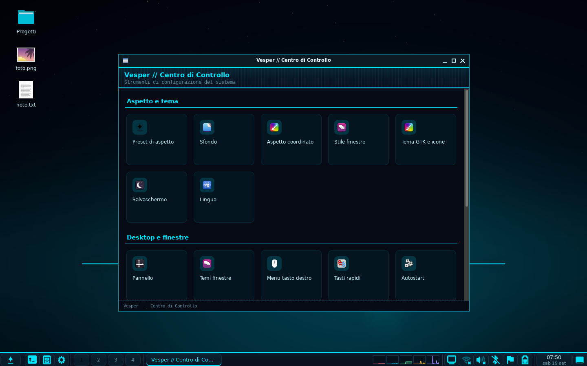
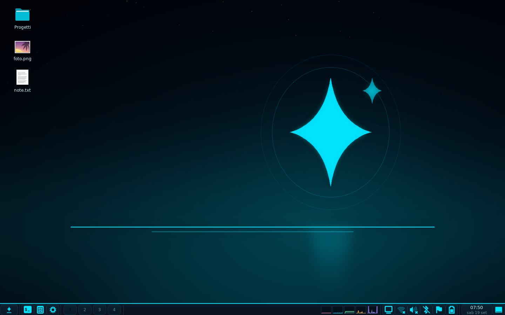

Cos'è
Vesper si installa come qualunque altro ambiente desktop: dopo l'installazione compare fra le sessioni del gestore di accesso e si sceglie al login. Gira su Python 3 e GTK3, occupa 6 MB e non porta con sé componenti di altri desktop.
Pannello
Menu delle applicazioni per categorie con ricerca, lista finestre, desktop virtuali, orologio con fuso, monitor delle risorse e applet per audio, batteria, rete, Bluetooth e schermi. Una barra per monitor.
Centro di Controllo
Diciannove pannelli nativi: aspetto, sfondo, tema GTK e icone, stile finestre, salvaschermo, lingua, schermi, tastiera, mouse, rete, Bluetooth, autostart, scorciatoie, informazioni di sistema.
File manager
Due modalità dallo stesso codice: finestra (schede, viste, copia asincrona, cestino, miniature) e desktop (sfondo e icone con posizionamento libero). Nessuna dipendenza da pcmanfm.
Preset di aspetto
Quindici colori. Sceglierne uno cambia insieme accento, sfondo, set di icone, tema GTK e decorazione delle finestre — subito, senza riavviare la sessione.
Salvaschermo
Otto animazioni disegnate in Cairo e blocco schermo con password (salvata come hash PBKDF2, mai in chiaro).
Cinque lingue
Italiano, inglese, francese, spagnolo e tedesco: si cambia dal menu o dal Centro di Controllo, e il pannello si riavvia da solo.
Schermate
Il desktop, così com'è appena installato.





Un colore, tutto coordinato
Ogni preset porta con sé il proprio sfondo e sceglie i set di icone e i temi del proprio colore fra quelli installati (le varianti Mint-Y e simili). Cambiando preset si ricolorano barra, menu, finestre e icone insieme.
Le finestre
Vesper sceglie da solo il modo migliore di disegnarle: se sul sistema c'è
marco (o metacity) usa le decorazioni vere
di Mint nel colore del preset; altrimenti usa Openbox
con le decorazioni di Vesper. Si cambia quando si vuole con
vesper-wm o dal Centro di Controllo.
Installazione
Debian, Ubuntu, Linux Mint — pacchetto .deb:
sudo apt install ./vesper_0.1.0_all.deb
Qualsiasi distribuzione, dai sorgenti:
tar xzf vesper-0.1.0.tar.gz && cd vesper-0.1.0 sudo ./install.sh --prefix=/usr
Poi si esce dalla sessione e al login si sceglie Vesper
nell'elenco delle sessioni. Ci sono anche le ricette per Arch
(PKGBUILD), Fedora/openSUSE (.spec) e Alpine
(APKBUILD): partono tutte dallo stesso installatore.
Cosa serve
| Componente | Perché | Debian/Ubuntu/Mint |
|---|---|---|
| openbox oppure marco | gestore finestre | openbox · marco |
| python3 + PyGObject + Cairo | tutto il desktop | python3-gi python3-gi-cairo gir1.2-gtk-3.0 |
| wmctrl | lista finestre e desktop virtuali | wmctrl |
| xrandr | gestione schermi | x11-xserver-utils |
Il pacchetto .deb se le porta dietro da solo; l'installatore da
sorgenti avvisa di ciò che manca, col comando giusto per la tua
distribuzione.